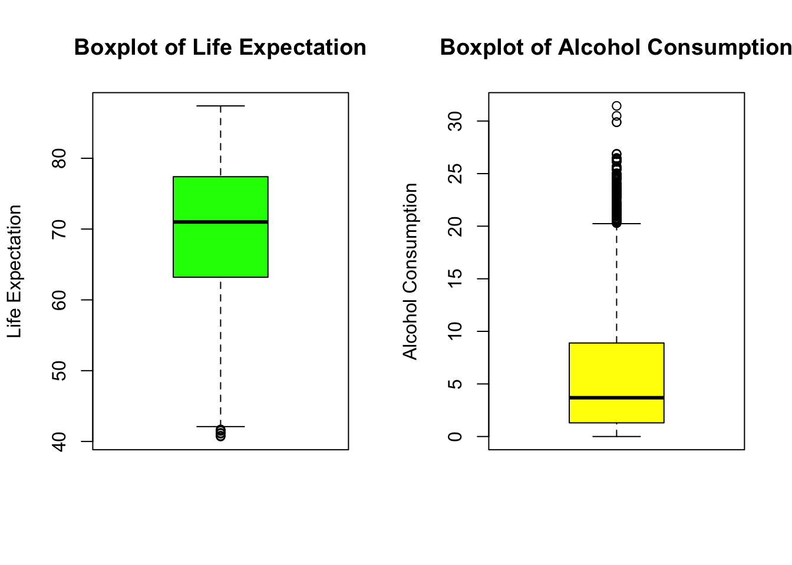
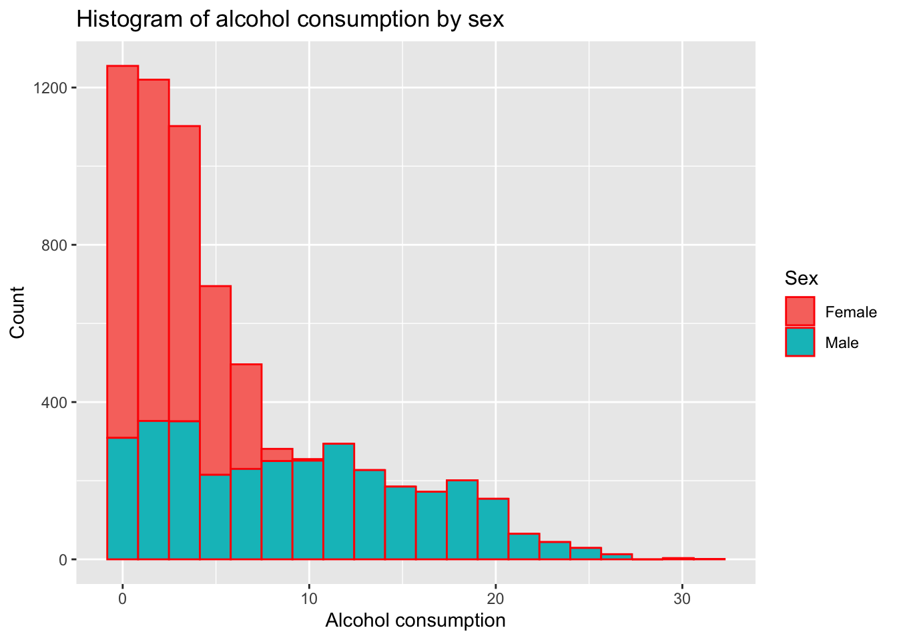
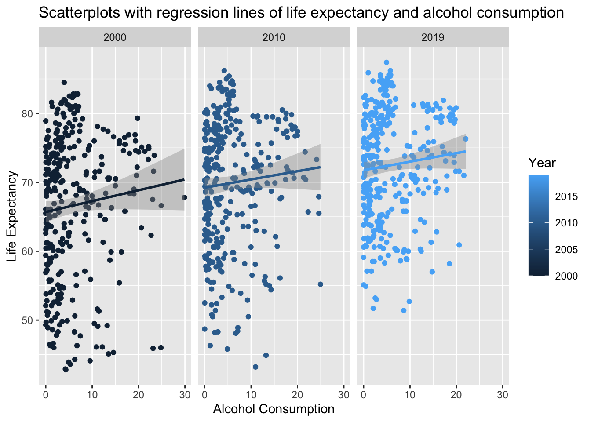
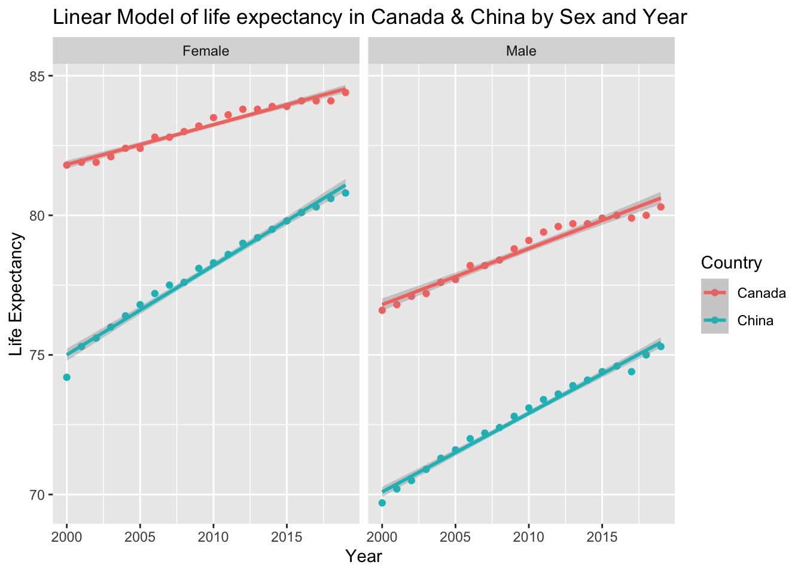
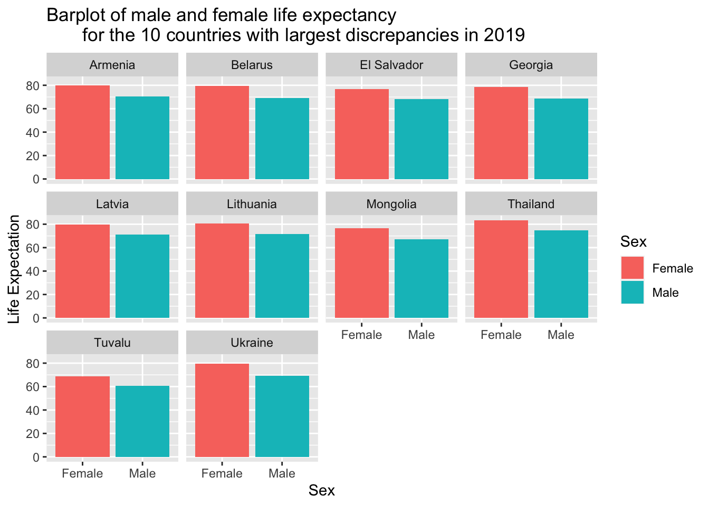
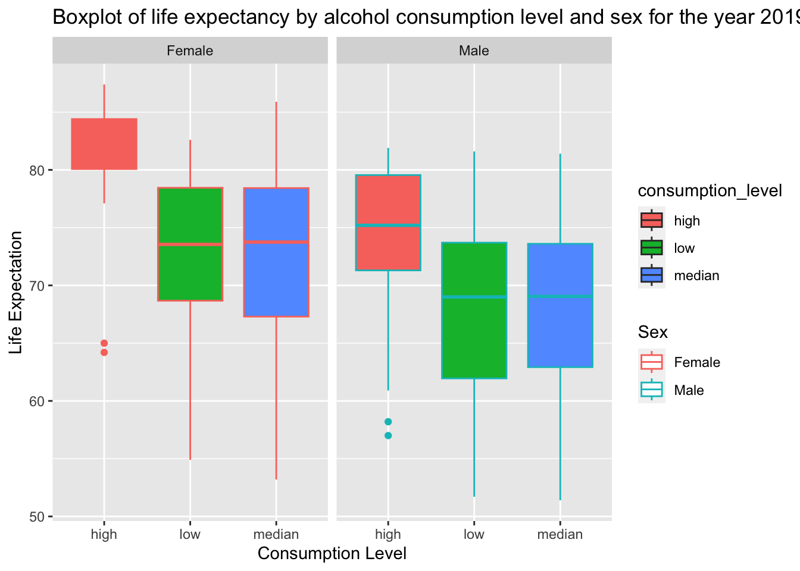
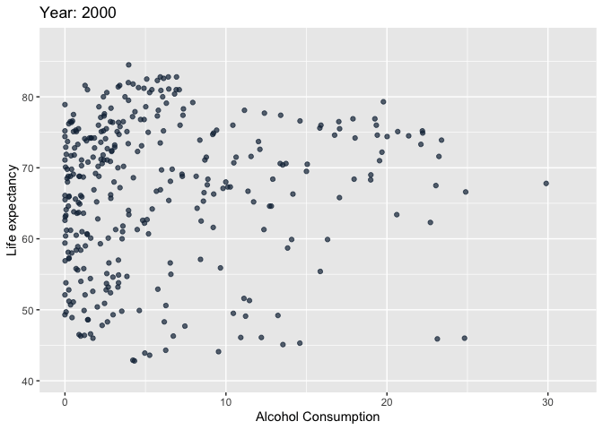
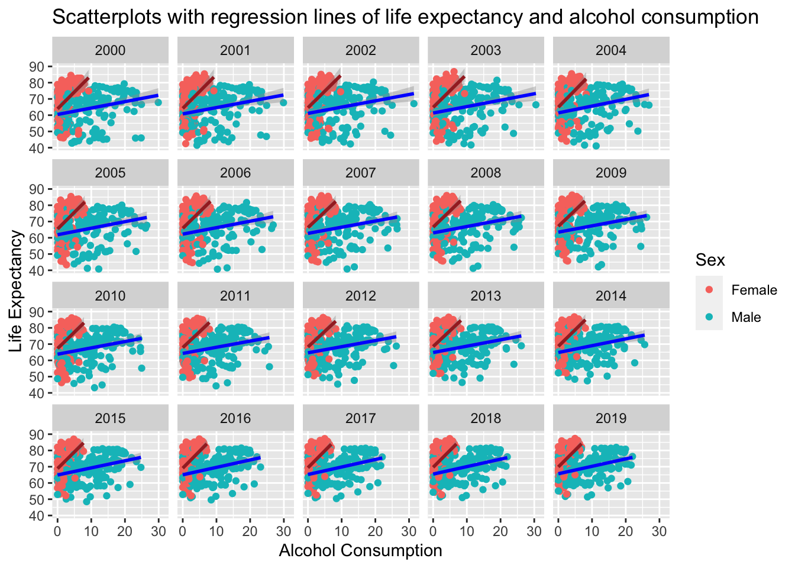
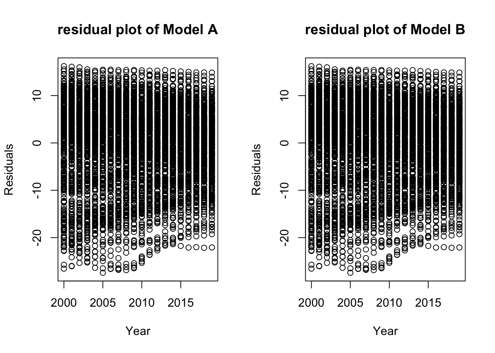

The primary questions of interest are: 1. What is the association between life expectancy and alcohol consumption? 2. Does this association differ by Sex? 3. How has life expectancy and alcohol consumption changed over time?
 From both box plots, we notice that there are some outliers in both variables. However, this is expected since there exists people who consume more Alcohol and there exists people who have lower Life Expectation.
Stacked histogram of alcohol consumption by sex. Use different color schemes than the ggplot default. 
Figure Interpretation: Most People consume alcohol less than 10 unit, Females are more likely to drink less alcohol and Males are more likely to drink more alcohol
Facet plot by year for 2000, 2010, and 2019 showing scatterplots with regression lines of life expectancy and alcohol consumption
## `geom_smooth()` using formula = 'y ~ x'
Figure Interpretation: For all of these years, Life Expectancy increases as Alcohol Consumption increases. The Life Expectancy increases by years.
A linear model of life expectancy as a function of time, adjusted for sex.
##
## Call:
## lm(formula = Life_Expectation ~ Year + Sex, data = dat)
##
## Residuals:
## Min 1Q Median 3Q Max
## -27.367 -6.413 1.836 6.960 16.682
##
## Coefficients:
## Estimate Std. Error t value Pr(>|t|)
## (Intercept) -580.19632 38.19150 -15.19 <2e-16 ***
## Year 0.32467 0.01901 17.08 <2e-16 ***
## SexMale -5.06339 0.21900 -23.12 <2e-16 ***
## ---
## Signif. codes: 0 '***' 0.001 '**' 0.01 '*' 0.05 '.' 0.1 ' ' 1
##
## Residual standard error: 8.957 on 6689 degrees of freedom
## Multiple R-squared: 0.11, Adjusted R-squared: 0.1097
## F-statistic: 413.2 on 2 and 6689 DF, p-value: < 2.2e-16##
## Call:
## lm(formula = Life_Expectation ~ Year + Sex, data = dat[dat$Country ==
## "Canada", ])
##
## Residuals:
## Min 1Q Median 3Q Max
## -0.53566 -0.17599 0.03276 0.18809 0.46039
##
## Coefficients:
## Estimate Std. Error t value Pr(>|t|)
## (Intercept) -2.621e+02 1.472e+01 -17.81 <2e-16 ***
## Year 1.718e-01 7.326e-03 23.46 <2e-16 ***
## SexMale -4.465e+00 8.449e-02 -52.85 <2e-16 ***
## ---
## Signif. codes: 0 '***' 0.001 '**' 0.01 '*' 0.05 '.' 0.1 ' ' 1
##
## Residual standard error: 0.2672 on 37 degrees of freedom
## Multiple R-squared: 0.9891, Adjusted R-squared: 0.9885
## F-statistic: 1672 on 2 and 37 DF, p-value: < 2.2e-16##
## Call:
## lm(formula = Life_Expectation ~ Year + Sex, data = dat[dat$Country ==
## "China", ])
##
## Residuals:
## Min 1Q Median 3Q Max
## -0.98607 -0.04110 0.07953 0.17883 0.28329
##
## Coefficients:
## Estimate Std. Error t value Pr(>|t|)
## (Intercept) -5.267e+02 1.368e+01 -38.50 <2e-16 ***
## Year 3.009e-01 6.807e-03 44.21 <2e-16 ***
## SexMale -5.275e+00 7.851e-02 -67.19 <2e-16 ***
## ---
## Signif. codes: 0 '***' 0.001 '**' 0.01 '*' 0.05 '.' 0.1 ' ' 1
##
## Residual standard error: 0.2483 on 37 degrees of freedom
## Multiple R-squared: 0.9943, Adjusted R-squared: 0.994
## F-statistic: 3235 on 2 and 37 DF, p-value: < 2.2e-16## `geom_smooth()` using formula = 'y ~ x'
Summary: From both linear model and plots, we notice that Male have lower Life Expectancy than Female. The Life expecancy is increasing over years. Canada has a higher Life expectancy than China, while both country have higher Life expectancy than the World Average.
A barplot of male and female life expectancy for the 10 countries with largest discrepancies in 2019. 
Figure Interpretation: Females usually have higher life expectancy than Males.
A boxplot of life expectancy by alcohol consumption level and sex for the year 2019. 
Figure Interpretation: People with high alcohol consumption level usually have higher life expectancy. People with Low and Median alcohol consumption level usually have similar but less life expectancy. Females have overall higher life expectancy than males.
A visualization to examine the association life expectancy with alcohol consumption over time. 
Figure Interpretation: For all of these years, Life Expectancy increases as Alcohol Consumption increases. The Life Expectancy increases by years.
Construct a multiple linear regression model to examine the association between alcohol consumption and life expectancy, adjusted for time and sex. First use time as a linear predictor variable, and then fit another model where you put a cubic regression spline on time. Provide summaries of your models, plots of the linear and non-linear associations, and interpretation of the linear and non-linear associations.
##
## Call:
## lm(formula = Life_Expectation ~ Year + Sex + Alcohol, data = dat)
##
## Residuals:
## Min 1Q Median 3Q Max
## -27.421 -5.276 2.071 6.275 16.226
##
## Coefficients:
## Estimate Std. Error t value Pr(>|t|)
## (Intercept) -581.31471 36.40924 -15.97 <2e-16 ***
## Year 0.32453 0.01812 17.91 <2e-16 ***
## SexMale -8.77330 0.25312 -34.66 <2e-16 ***
## Alcohol 0.54729 0.02111 25.92 <2e-16 ***
## ---
## Signif. codes: 0 '***' 0.001 '**' 0.01 '*' 0.05 '.' 0.1 ' ' 1
##
## Residual standard error: 8.539 on 6688 degrees of freedom
## Multiple R-squared: 0.1912, Adjusted R-squared: 0.1909
## F-statistic: 527.1 on 3 and 6688 DF, p-value: < 2.2e-16## `geom_smooth()` using formula = 'y ~ x'
## `geom_smooth()` using formula = 'y ~ x'
##
## Family: gaussian
## Link function: identity
##
## Formula:
## Life_Expectation ~ s(Year, bs = "cr") + Sex + Alcohol
##
## Parametric coefficients:
## Estimate Std. Error t value Pr(>|t|)
## (Intercept) 70.83944 0.15717 450.73 <2e-16 ***
## SexMale -8.77330 0.25312 -34.66 <2e-16 ***
## Alcohol 0.54729 0.02111 25.92 <2e-16 ***
## ---
## Signif. codes: 0 '***' 0.001 '**' 0.01 '*' 0.05 '.' 0.1 ' ' 1
##
## Approximate significance of smooth terms:
## edf Ref.df F p-value
## s(Year) 1 1 320.8 <2e-16 ***
## ---
## Signif. codes: 0 '***' 0.001 '**' 0.01 '*' 0.05 '.' 0.1 ' ' 1
##
## R-sq.(adj) = 0.191 Deviance explained = 19.1%
## GCV = 72.965 Scale est. = 72.921 n = 6692
## Analysis of Variance Table
##
## Model 1: Life_Expectation ~ Year + Sex + Alcohol
## Model 2: Life_Expectation ~ s(Year, bs = "cr") + Sex + Alcohol
## Res.Df RSS Df Sum of Sq F Pr(>F)
## 1 6688 487698
## 2 6688 487698 5.3624e-09 2.8405e-07 0.7264 5.223e-08 ***
## ---
## Signif. codes: 0 '***' 0.001 '**' 0.01 '*' 0.05 '.' 0.1 ' ' 1Interpretation: From the plots, summary, and the ANOVA table of both models, we found there is no difference between them, which means there is no additional effect if we add a cubic regression spline on Year. Overally speaking, both model tells that the life expectation gets higher linearly by year, alcohol consumption, and females have higher life expectation than males.